Le matin
Le petit déjeuner
Boissons chaudes, pain, biscottes, beurre, confiture, fromage et jambon, avant de repartir sur le GR.
Compris dans la demi-pension
Refuge gardé sur le plateau d'Emparis, étape du GR54 et du GR50.
25 places, des repas faits maison et la montagne pour seul voisin.
Un hébergement collectif à 2250 m, au cœur du parc national des Écrins. Vous partagez le dortoir avec d'autres randonneurs, dans des cabines que les gardiens attribuent groupe par groupe.
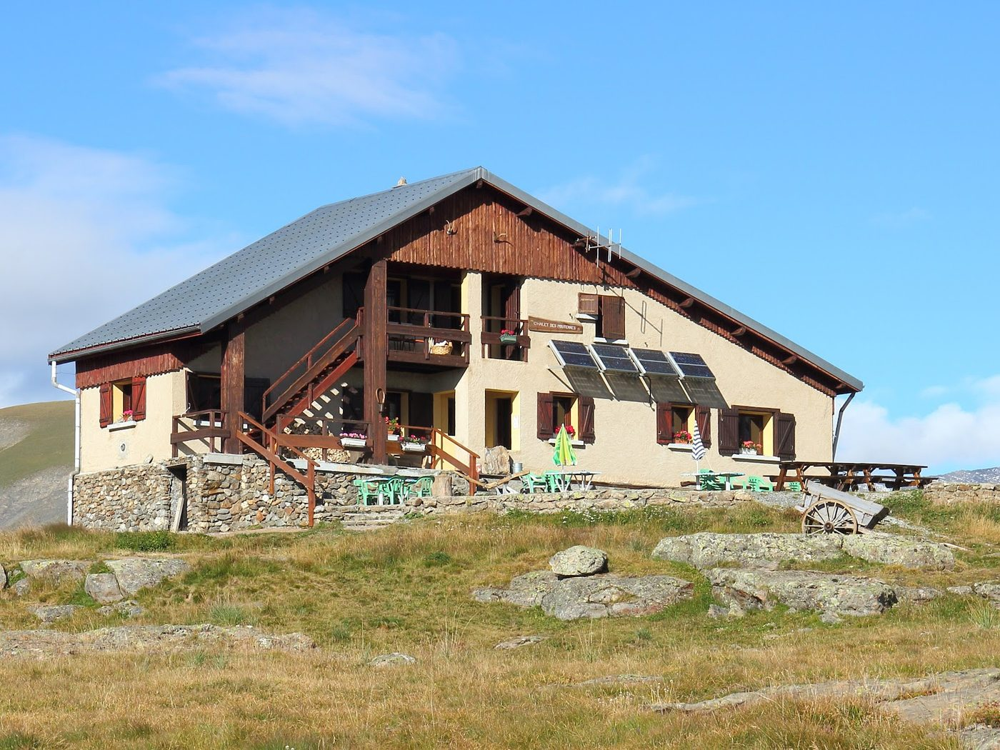
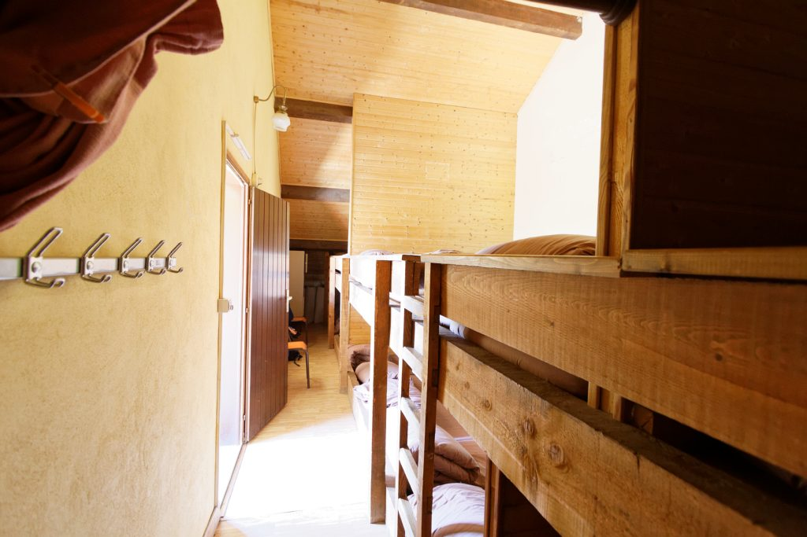
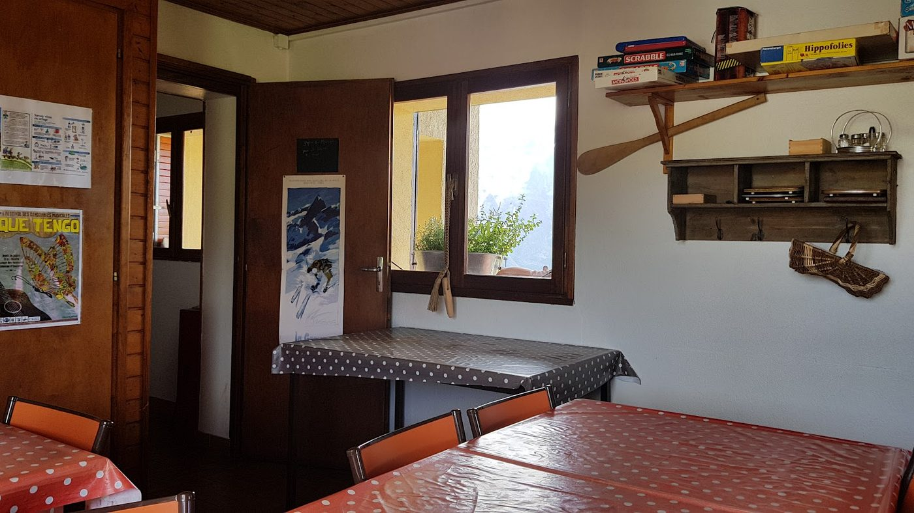
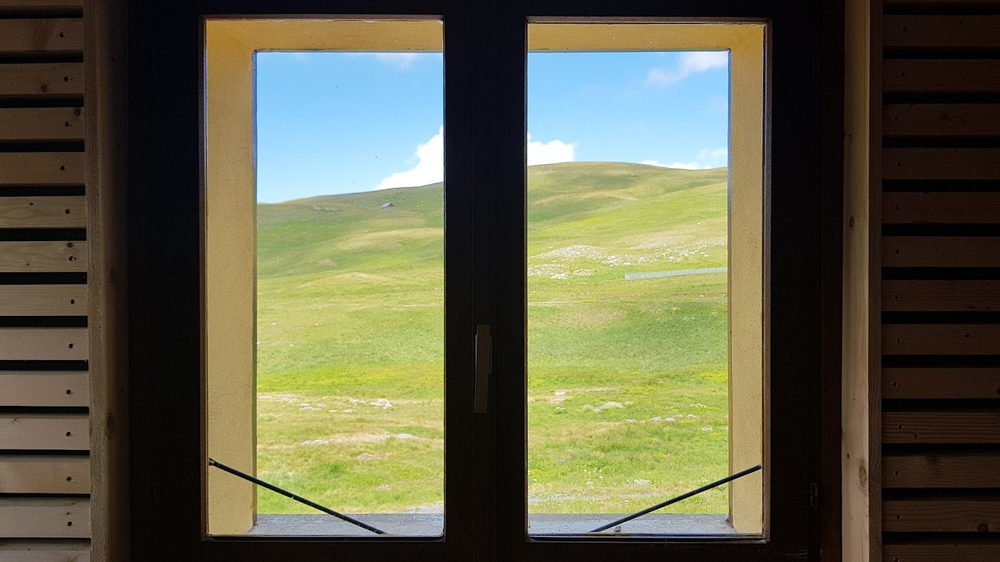
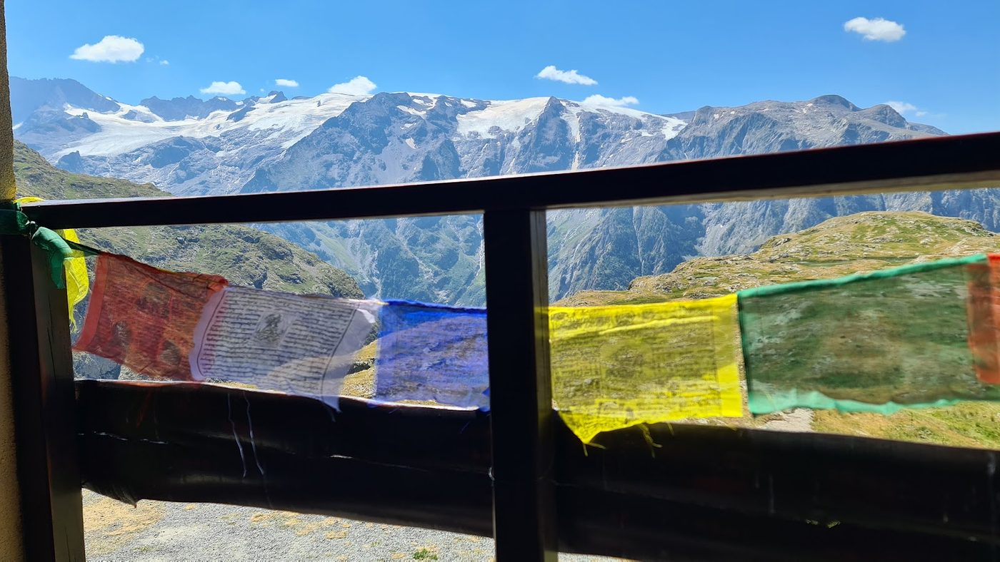
La gardienne cuisine au refuge, du petit déjeuner au repas du soir. Les menus végétariens sont préparés avec plaisir, à signaler 48 h à l'avance.
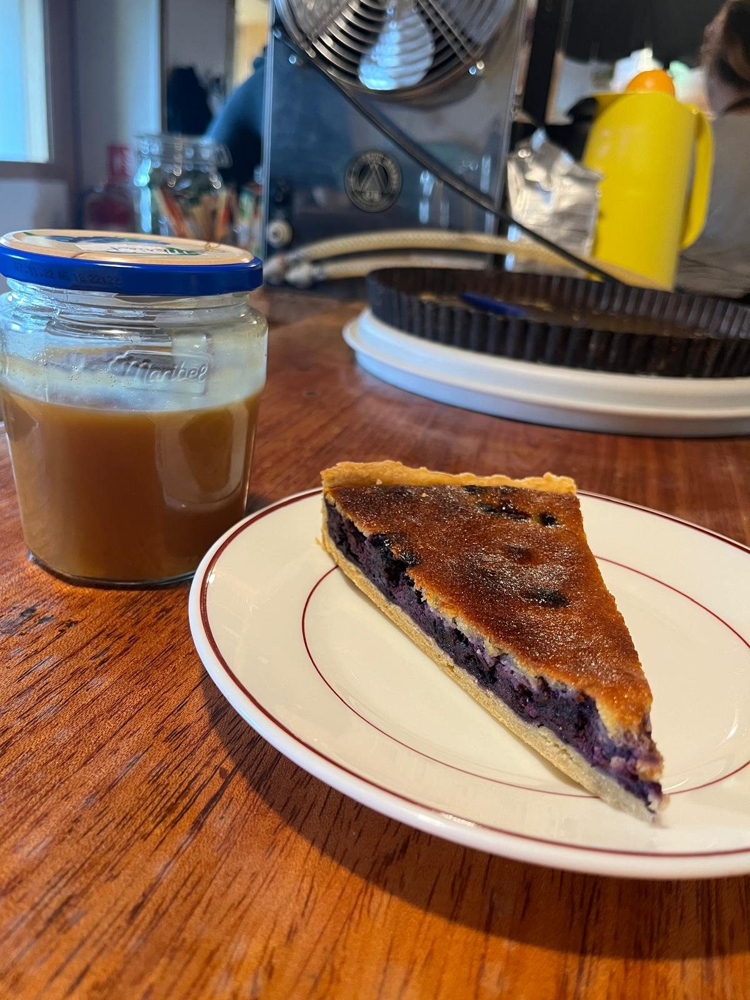
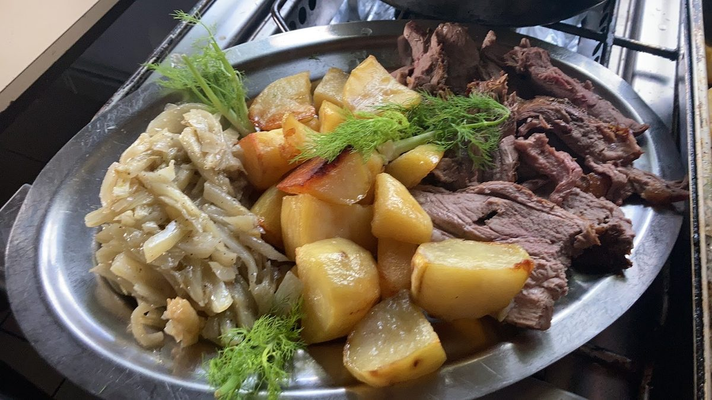
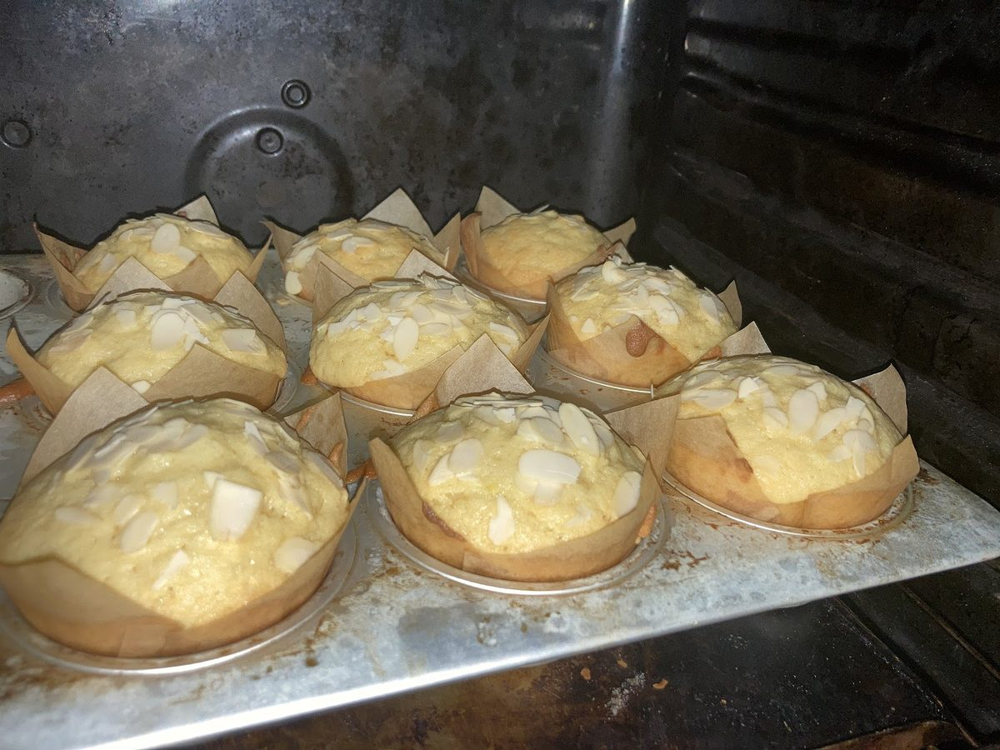
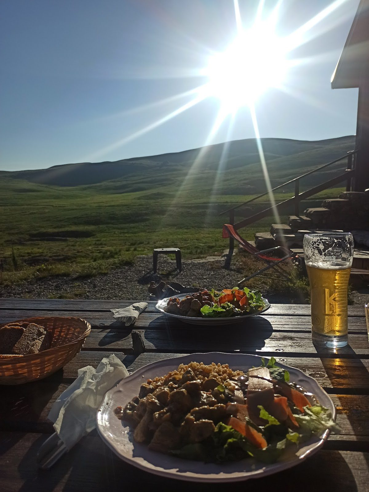
Boissons chaudes, pain, biscottes, beurre, confiture, fromage et jambon, avant de repartir sur le GR.
Compris dans la demi-pension
Une galette avec la salade du jardin, du thon et des tomates, une salade individuelle maison, du chocolat et une petite douceur. Sur réservation.
13 € par personne
Soupe de légumes, viande garnie, fromage, dessert. Il est compris dans la demi-pension et se prend aussi seul.
26 € seul, sans la nuitée
Les prix s'entendent par personne et par nuit. Les repas sont détaillés plus haut, dans la section Repas.
Choisissez vos dates et le nombre de personnes : les places encore libres s'affichent aussitôt, avec le total de votre séjour.
Le règlement se fait sur place, par chèque ou en espèces. Il n'y a pas de lecteur de carte bancaire au refuge. Des arrhes sont demandées à la réservation : elles ne sont pas encaissées et garantissent votre place. Elles restent acquises au refuge en cas d'annulation après le 15 juin. À 2250 m, une place libérée la veille ne se remplit pas. Les repas, eux, sont préparés d'avance.
Le refuge se rejoint uniquement à pied. Choisissez votre départ selon le versant d'où vous arrivez.
Le départ le plus courant, au barrage du Chambon. Le sentier monte au village de Mizoën puis file vers le hameau de Singuigneret, en surplomb du lac.
La variante GR54 C, qui passe par le refuge des Clots. Plus longue, c'est la plus belle montée selon la gardienne.
Par le GR54, au départ du village, à 1650 m. Une montée régulière jusqu'au plateau.
Par la D1091 puis la D33. Stationnement au départ du télésiège, à 1735 m, au bord du torrent du Gâ.
La piste est fermée aux véhicules du 15 juin au 30 août, pour préserver le plateau de la surfréquentation. On monte à pied. C'est aussi ce qui rend l'endroit si calme.
Cartes : IGN TOP 25, 3335 ET Bourg d'Oisans et 3435 ET Valloire.
Le plateau d'Emparis est un belvédère sur la face nord de la Meije et sur le Râteau. Voici ce que les gardiens conseillent le plus souvent.
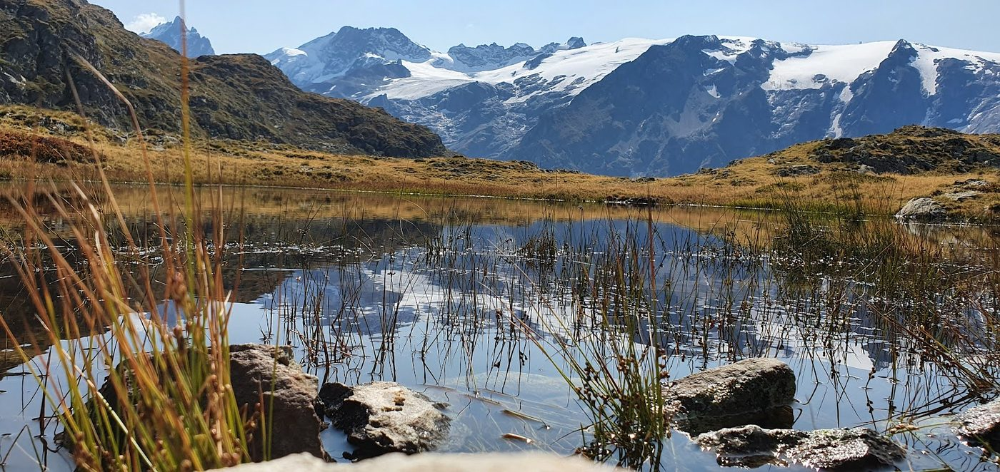
Le balcon de la Meije. 2 lacs posés à 2460 m et 2480 m, miroirs du glacier de la Girose et du Dôme de la Lauze. Sans difficulté.
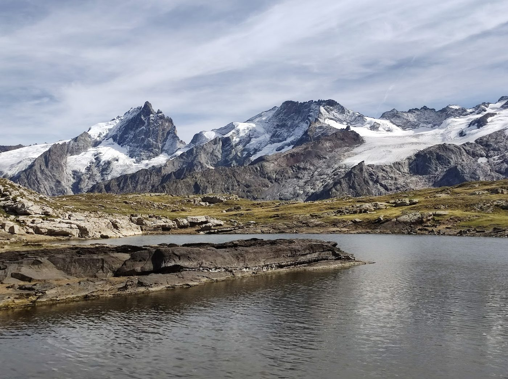
Un 3020 m accessible, avec un panorama à 360°. L'arête finale est rocheuse et modérément aérienne, le sentier est balisé par des cairns.
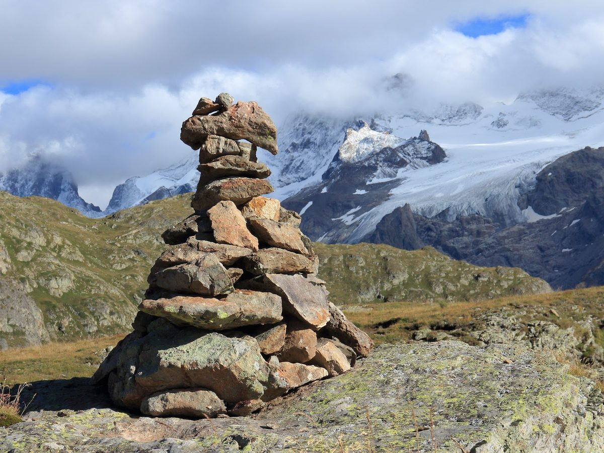
Par le col du Souchet, puis le sentier qui surplombe le vallon de la Buffle. Comptez la journée si vous flânez près des ruisseaux.
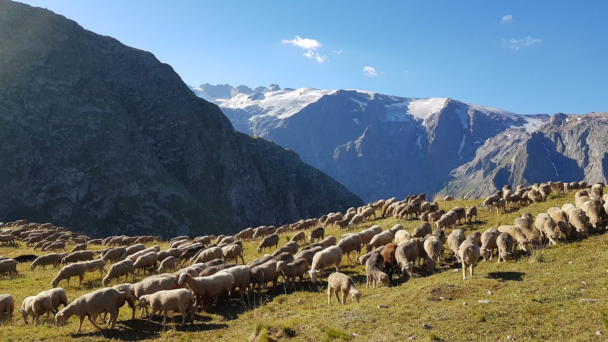
La rivière en contrebas. Les pieds dans l'eau, les truites, les marmottes et la flore du plateau : gentiane, campanule, pensée, trolle.
135 avis sur Google, dont 119 notés 5 étoiles
★★★★★« L'équipe du refuge est d'une gentillesse incroyable, ils vous accueillent chaleureusement et ils ont toujours le mot pour rire. De bon conseil pour les itinéraires du plateau. »
★★★★★« Bonne ambiance et très bon accueil. La vue est incroyable, on peut aussi observer des chamois. Demi-pension au top, bien servi et c'est bon. Couchage en dortoir confortable. »
★★★★★« Première expérience entre amies en refuge. Tout était parfait : la gentillesse et la disponibilité des gardiens, le lieu avec une vue magnifique, la propreté du refuge, les repas faits maison. »
★★★★★« Passage d'une nuit en demi-pension en famille, première fois pour nos 6 et 10 ans. Tout le monde a été conquis : la nourriture, le confort des couchages, la disponibilité des gardiens. »
★★★★★« Raphaël et Stéphanie sont des hôtes incroyables. Notre trek a été embelli par leur accueil et leur générosité. »
★★★★★« Super nuit au refuge des Mouterres. Nous avons passé une nuit en demi-pension avec mon groupe d'amis randonneurs, 15 personnes. On se sent accueilli chaleureusement, le refuge est propre et fonctionnel. Le repas du soir était délicieux. »
★★★★★« Gîte tenu par un couple fort sympathique, beau partage avec eux sur le territoire et l'environnement. Nourriture et couchage excellents. »
★★★★★« Super expérience. Le personnel est très agréable et donne de super conseils. La vue est splendide et vous pourrez même admirer les animaux des montagnes. »
★★★★★« Nous sommes venus le 2 août au soir et nous avons été extrêmement bien accueillis dans le refuge. Nous tenons donc à vous remercier. »
★★★★★« Nous nous sommes rendus avec notre chien pour le week-end du 15 août. Nous avons eu un super accueil, un temps magnifique et un dîner formidable. À l'année prochaine. »
Un doute sur l'itinéraire, un régime alimentaire, un groupe à placer : écrivez, la gardienne vous répond.
En saison, les gardiens sont sur les pistes et consultent peu leurs messages : le téléphone reste le moyen le plus sûr de les joindre. Hors saison, le courriel est préférable.